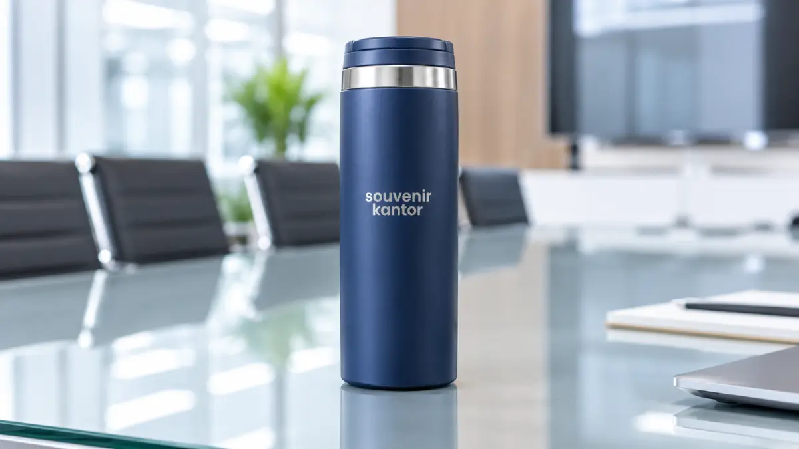

Souvenir Workshop Custom Logo Palembang untuk Branding Acara
Souvenir Kantor Jakarta - Souvenir workshop custom logo Palembang membawa identitas perusahaan melalui notebook, tumbler, tote bag, dan pulpen yang dicetak sesuai desain acara.
- Custom logo memperkuat identitas penyelenggara pada setiap produk souvenir.
- Notebook, tumbler, tote bag, dan pulpen adalah produk paling umum diberi logo.
- Teknik branding bervariasi mulai dari sablon hingga laser engraving.
- Penempatan logo perlu disesuaikan dengan bentuk dan material produk.
- Souvenir Kantor Jakarta membantu mewujudkan custom logo sesuai konsep acara Anda.
Souvenir workshop custom logo Palembang membawa identitas perusahaan melalui notebook, tumbler, tote bag, dan pulpen yang dicetak sesuai desain acara. Kehadiran merchandise dengan sentuhan personalisasi ini menjadi instrumen branding yang powerful sekaligus memberikan nilai guna tinggi bagi seluruh peserta.
Menyelenggarakan workshop di Palembang menuntut persiapan menyeluruh, terutama dalam menciptakan kesan visual yang melekat. Melalui custom logo yang presisi dan estetis, setiap item merchandise mampu merepresentasikan nilai profesionalisme instansi penyelenggara secara konsisten.
- Mengapa Souvenir Workshop Perlu Custom Logo?
- Produk Souvenir Workshop yang Cocok untuk Custom Logo
- Notebook Custom Logo
- Tumbler Custom Logo
- Tote Bag Custom
- Pulpen Custom
- Paket Merchandise Workshop
- Pilihan Teknik Branding Souvenir Workshop
- Sablon
- UV Printing
- Laser Engraving
- Emboss atau Deboss
- Tabel Produk dan Teknik Branding Souvenir Workshop
- Ide Penempatan Logo pada Souvenir Workshop
- Logo pada Produk Utama
- Branding pada Packaging
- Souvenir Custom Logo untuk Berbagai Acara di Palembang
- FAQ Souvenir Workshop Custom Logo Palembang
- Kesimpulan
Mengapa Souvenir Workshop Perlu Custom Logo?
Menambahkan custom logo pada souvenir workshop memberikan sejumlah manfaat strategis bagi penyelenggara, di antaranya:
- Memperkuat identitas penyelenggara di setiap produk yang dibagikan kepada audiens.
- Meningkatkan visibilitas brand setiap kali produk digunakan kembali oleh peserta dalam aktivitas sehari-hari.
- Membuat merchandise terasa lebih personal dan sangat relevan dengan tema acara yang diusung.
- Memberikan kesan profesional dan kredibel pada penyelenggaraan workshop dari awal hingga akhir.
- Menjadikan souvenir sebagai bagian integral dari identitas visual acara secara keseluruhan.
Produk Souvenir Workshop yang Cocok untuk Custom Logo
Notebook, tumbler, tote bag, dan pulpen adalah produk yang paling fleksibel untuk ditambahkan custom logo pada souvenir workshop. Pemilihan item yang tepat memastikan pesan branding tersampaikan dengan optimal.
Notebook Custom Logo
Cover notebook memiliki permukaan luas dan rata sehingga logo dapat dicetak dengan hasil yang jelas dan mudah terbaca oleh peserta maupun narasumber. Buku catatan ini juga sering dibawa ke berbagai pertemuan bisnis di luar workshop.
Tumbler Custom Logo
Body tumbler yang silindris memungkinkan logo ditempatkan secara melingkar atau pada satu sisi utama, tergantung desain yang diinginkan penyelenggara. Selain fungsional menjaga suhu minuman, tumbler memiliki masa pakai yang panjang.
Tote Bag Custom
Bagian depan tote bag menjadi area branding yang paling terlihat, terutama saat produk ini dibawa peserta di luar lokasi acara, menciptakan efek berjalan bagi promosi brand Anda.
Pulpen Custom
Meski areanya terbatas, body pulpen tetap dapat memuat logo atau nama acara secara ringkas dan proporsional. Pulpen selalu menjadi item esensial pendamping notebook saat sesi pelatihan.
Paket Merchandise Workshop
Ketika beberapa produk digabung menjadi satu paket, penempatan logo perlu diselaraskan agar tampilan antar produk tetap konsisten satu sama lain, memberikan kesan eksklusif dan rapi.

Pilihan Teknik Branding Souvenir Workshop
Beberapa teknik branding umum digunakan untuk mencetak logo pada produk souvenir workshop, masing-masing dengan karakter hasil yang berbeda:
Sablon
Sablon menghasilkan warna yang solid dan sangat cocok digunakan pada permukaan kain seperti tote bag, pouch, atau spunbond bag dengan biaya yang ekonomis untuk jumlah besar.
UV Printing
UV printing memberikan hasil cetak yang tajam, kaya warna (full color), dan sangat detail. Metode modern ini sering digunakan pada permukaan notebook hard cover maupun tumbler berbahan stainless dan plastik.
Laser Engraving
Laser engraving menghasilkan kesan elegan, mewah, dan bersifat permanen (tidak mudah pudar atau terkelupas). Teknik ini umum digunakan pada tumbler stainless steel atau pulpen berbahan logam.
Emboss atau Deboss
Teknik ini menciptakan efek timbul atau tenggelam pada permukaan produk, memberikan kesan premium dan sentuhan tekstur yang berkelas, terutama pada cover notebook kulit sintetis (leatherette).
Tabel Produk dan Teknik Branding Souvenir Workshop
Berikut adalah panduan ringkas perpaduan produk, area branding, teknik cetak, dan kesan yang dihasilkan untuk kebutuhan workshop Anda:
| Produk | Area Branding | Teknik | Kesan |
|---|---|---|---|
| Notebook | Cover Depan / Belakang | UV Printing / Emboss | Profesional |
| Tumbler | Body Silindris (1 Sisi / Memutar) | UV Print / Laser Engraving | Modern |
| Tote Bag | Depan Tengah | Sablon / DTF | Promosional |
| Pulpen | Body Atas / Samping Klip | UV Print / Laser Engraving | Minimalis |
| Gift Box | Tutup Box Atas | Screen Printing / Poly Foil | Premium |
Ide Penempatan Logo pada Souvenir Workshop
Penempatan logo yang tepat akan membuat identitas acara lebih mudah dikenali tanpa mengurangi fungsi utama produk souvenir:
- Logo pada bagian depan produk agar langsung tertangkap pandangan mata saat pertama kali diterima.
- Logo pada cover notebook sebagai area branding utama yang memberikan visibilitas tinggi.
- Logo pada body tumbler dengan posisi yang proporsional dan tidak mengganggu kenyamanan saat digenggam.
- Logo pada tote bag di bagian depan yang mudah terlihat ketika dijinjing di tempat umum.
- Identitas acara pada packaging sebagai sentuhan akhir yang melengkapi unboxing experience.
Logo pada Produk Utama
Penempatan logo pada produk yang paling sering digunakan, seperti notebook dan tumbler, memberikan dampak branding yang jauh lebih besar dan bertahan lebih lama dibandingkan produk pendukung lainnya.
Branding pada Packaging
Packaging yang turut diberi identitas acara akan memperkuat kesan pertama sebelum peserta membuka dan menggunakan produk souvenir di dalamnya, menambah nilai prestise penyelenggara.
Souvenir Custom Logo untuk Berbagai Acara di Palembang
Kebutuhan souvenir custom logo dapat diterapkan pada berbagai jenis agenda korporat maupun akademis di Palembang, di antaranya:
Corporate Workshop
Diselenggarakan untuk internal perusahaan dalam meningkatkan kompetensi staf.
Training Perusahaan
Program pelatihan berkala dengan peserta lintas divisi dan departemen.
Workshop Kampus
Agenda seminar dan workshop ilmiah bagi mahasiswa serta dosen.
Workshop Instansi Pemerintahan
Pelatihan kedinasan dan seminar instansi pemerintahan maupun swasta.
Workshop Komunitas
Kegiatan edukasi bagi komunitas kreatif dan organisasi profesi daerah.
Pelatihan Profesional
Program sertifikasi profesional berstandar nasional dan internasional.
Siapkan Souvenir Workshop Custom Logo Anda Sekarang
Siapkan logo dan konsep acara workshop Anda, lalu konsultasikan kebutuhan merchandise custom kepada Souvenir Kantor Jakarta agar identitas acara Anda tampil maksimal di setiap produk souvenir.
Hubungi Souvenir Kantor JakartaFAQ Souvenir Workshop Custom Logo Palembang
Kesimpulan
Souvenir workshop custom logo menciptakan alur yang jelas mulai dari penggunaan produk, visibilitas logo, hingga pengalaman positif peserta selama acara berlangsung.
Hubungi Souvenir Kantor Jakarta sekarang untuk mewujudkan souvenir workshop dengan custom logo yang sesuai konsep acara Anda di Palembang.